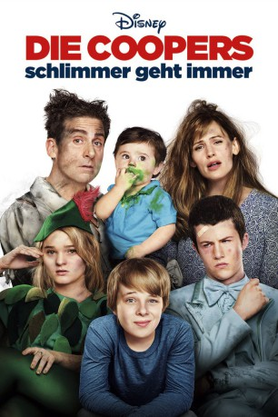

gesehen am 09.03.2015
gesehen am 09.03.2015Alternativ: Alexander and the Terrible, Horrible, No Good, Very Bad Day gesehen am 09.03.2015
 
 IMDB-Wertung: 6.2 / 10
IMDB-Wertung: 6.2 / 10  Metascore:
Metascore: 
Der 11-jährige Alexander ist ein Pechvogel, wie er im Buche steht. Andauernd passieren ihm die blödesten Dinge, während seine restliche Familie kaum weiß, wohin mit ihrem Glück. Es ist klar, dass sich Alexander fragt, warum nur ihm der Kaugummi im Haar kleben bleibt oder das Schulheft abfackelt – bis zu diesem speziellen Tag, an dem es doch alle auf einmal trifft, so richtig dicke: Vater Ben bei einem Vorstellungsgespräch und Bruder Anthony bei seiner lang ersehnten Führerscheinprüfung. Auch Mutter Kelly sowie Schwester Emily werden von ihren ganz eigenen Probleme geplagt. Als alles gehörig schief geht, freut sich Alexander zwar insofern, als dass er mit seinem Unglück nicht länger allein ist. Allerdings erlebt er ebenfalls den schlimmsten Tag seines bisherigen Lebens…
Jahr: 2014
Dauer: 81 Minuten
FSK: 0
Land: USA Studio: Walt Disney Studios Motion PicturesTonspuren: DTS - ,
Untertitel:
Auflösung: 1080p (1920×808) Größe: 4352 MB
Regisseur: Miguel Arteta
Drehbuch: Rob Lieber, Rob Lieber, Judith Viorst
Soundtrack: Christophe Beck
Darsteller:
 Steve Carell als Ben Cooper
Steve Carell als Ben Cooper Jennifer Garner als Kelly Cooper
Jennifer Garner als Kelly Cooper Dylan Minnette als Anthony Cooper
Dylan Minnette als Anthony Cooper Bella Thorne als Celia
Bella Thorne als Celia Mary Mouser als Audrey Gibson
Mary Mouser als Audrey Gibson Toni Trucks als Steph
Toni Trucks als Steph Liz Carey als Yoga Instructor
Liz Carey als Yoga Instructor Rizwan Manji als Mr. Cellars
Rizwan Manji als Mr. Cellars Donald Glover als Greg
Donald Glover als Greg Burn Gorman als Mr. Brand
Burn Gorman als Mr. Brand Jesse Garcia als Dwayne
Jesse Garcia als Dwayne Jennifer Coolidge als Ms. Suggs
Jennifer Coolidge als Ms. Suggs Steve Bannos als Security Guard
Steve Bannos als Security Guard Dick Van Dyke als Dick Van Dyke , uncredited
Dick Van Dyke als Dick Van Dyke , uncreditedDatei: X:\2014(A-F)\Coopers - Schlimmer geht immer, Die (2014, FSK, 1920x808).mkv seit 02.02.2015
Festplatte: HD 2013(I-Z)-2014(A-Z)
 Es gibt insgesamt 119 Filme in der Gruppe '2014(A-F)'
Es gibt insgesamt 119 Filme in der Gruppe '2014(A-F)'